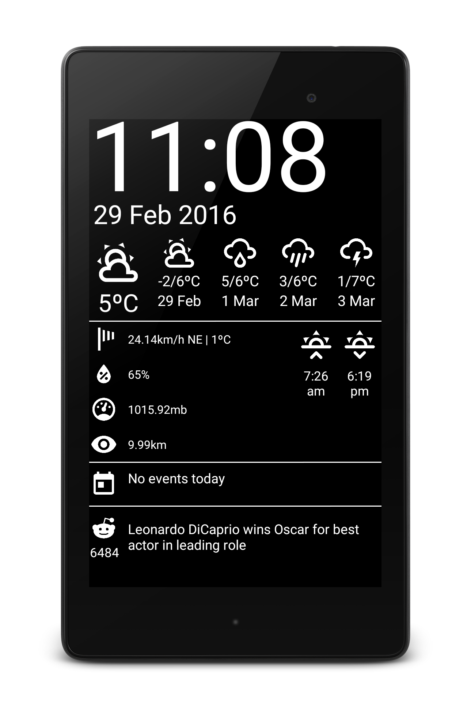

Wipe the dust of your Nexus 7
This is an Android application for a magic mirror. I had an old Nexus 7 (2012) lying around collecting dust and got the idea from HomeMirror by Hannah Mitt. I started this project because I wanted to explore the MVP pattern for Android and Hannah's app did not have all the functionality I needed. Feel free to make this application look good on your own device (it was designed for the Nexus 7). Have any great ideas to make this more configurable or usable on more devices? Submit a pull request!
Find on GitHub
- 
-